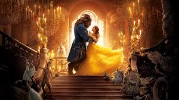
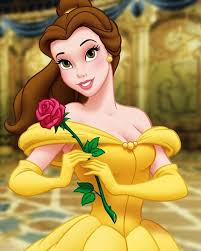
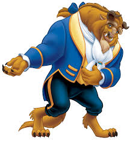

Beauty and the Beast (Bela e a Fera) é uma obra clássica da animação que encanta gerações ao combinar romance, fantasia e importantes lições sobre empatia e respeito. A história acompanha Bela, uma jovem inteligente e sonhadora, que encontra um misterioso príncipe amaldiçoado a viver na forma de uma fera até que aprenda o verdadeiro significado do amor. Com uma narrativa envolvente, personagens marcantes e uma trilha sonora inesquecível, o filme destaca valores como a beleza interior, a coragem e a importância de enxergar além das aparências. Reconhecido mundialmente, o longa tornou-se um dos maiores sucessos da animação e permanece como uma referência atemporal do cinema familiar.

A Bela e a Fera é um filme que conta a história de Bela, uma jovem inteligente e bondosa que que vive em uma pequena aldeia. Sua vida muda quando ela passa a morar no castelo de uma Fera, que na verdade é um prínipe enfeitiçado. Com o tempo, Bela aprende a enxergar além da aparência e descobre a bondade que existe dentro dele. O filme transmite importantes mensagens sobre amor, respeito, amizade e a importância de valorizar o que há no coração das pessoas.
Bela é uma jovem que vive em uma pequena aldeia e se destaca por sua inteligência, bondade e amor pelos livros. Diferente das outras pessoas da vila, ela sonha com aventuras, e deseja conhecer o mundo além do lugar onde mora. Sua personalidade forte e seu coração generoso fazem dela uma personagem admirada por muitos.
Diferente dos outros habitantes da vila, que se contentam com a rotina, Bela sonha em explorar além das fronteiras conhecidas, buscando experiências que a façam crescer e aprender. Sua inteligência aguçada permite que compreenda rapidamente situações complexas, e sua bondade faz com que todos que a conhecem sintam respeito e afeto por ela. Bela não apenas lê sobre aventuras, mas inspira outros a acreditarem que é possível transformar sonhos em realidade. Com um espírito indomável e um coração generoso, ela se torna uma figura admirada e querida, não apenas por sua aldeia, mas por todos que cruzam seu caminho.

história de A Bela e a Fera começa quando um príncipe arrogante e egoísta se recusa a ajudar uma velha senhora que,na verdade, era uma feiticeira. Como punição por sua falta de bondade, ele é transformado em uma terrível Fera, e todos os habitantes de seu castelo também são enfeitiçados. A única maneira de quebrar a maldição é aprender a amar alguém sinceramente e receber esse amor de volta antes que a última pétala de uma rosa encantada caia.

O castelo encantado é um dos elementos mais fascinantes da história. Após a maldição, o lugar que antes era cheio de vida tornou-se isolado e misterioso. Seus corredores longos, salões luxuosos e jardins abandonados criam uma atmosfera mágica e ao mesmo tempo melancólica. Os empregados do castelo foram transformados em objetos domésticos, mas mantiveram suas personalidades e esperanças. Entre eles estão Lumière, transformado em um candelabro; Horloge, transformado em um relógio; e Madame Samovar, transformada em um bule de chá. Apesar da tristeza causada pela maldição, os habitantes do castelo nunca perdem a esperança de que um dia tudo volte ao normal. Quando Bela chega ao local, o castelo ganha uma nova energia, tornando-se um espaço de amizade, aprendizado e transformação. O ambiente encantado simboliza a mudança interior da Fera e a possibilidade de redenção por meio do amor e da bondade.
A trilha sonora de A Bela e a Fera é considerada uma das mais memoráveis da história do cinema de animação.As músicas ajudam a desenvolver a narrativa, apresentar os personagens e transmitir emoções importantes ao público. A canção “Belle” apresenta a protagonista e mostra como ela se sente diferente dos demais moradores de sua aldeia. Já “Be Our Guest” é uma música alegre e divertida que destaca a hospitalidade dos moradores encantados do castelo. A canção-tema “Beauty and the Beast” acompanha um dos momentos mais emocionantes do filme, mostrando o crescimento do carinho entre Bela e a Fera. Composta por Alan Menken e Howard Ashman, a trilha sonora conquistou diversos prêmios e tornou-se um dos grandes motivos do sucesso do filme. As músicas permanecem populares até hoje e são lembradas por diferentes gerações de espectadores.
Os personagens de A Bela e a Fera são muito marcantes. Bela é uma jovem corajosa, inteligente e apaixonada por livros. A Fera, apesar da aparência assustadora, possui um coração bondoso. Outros personagens importantes são Lumière, Horloge, Madame Samovar e Zip, que ajudam Bela e a Fera ao longo da história.
O filme possui várias curiosidades interessantes que o tornam ainda mais especial. Uma das mais importantes é o fato de ter sido a primeira animação da história a ser indicada ao Oscar de Melhor Filme, um feito que demonstrou o reconhecimento da qualidade artística da obra. Além disso, a famosa cena do baile entre Bela e a Fera foi inovadora para a época, utilizando técnicas avançadas de computação gráfica que impressionaram o público e a crítica. Outra curiosidade é que a história foi inspirada em um conto francês do século XVIII escrito por Jeanne-Marie Leprince de Beaumont. O filme também recebeu diversos prêmios internacionais e é considerado um dos maiores clássicos da Disney. Seu sucesso foi tão grande que inspirou adaptações para teatro, séries, produtos licenciados e uma versão em live-action lançada anos depois.
A principal moral da história é que a verdadeira beleza não está na aparência física, mas no caráter e nas atitudes das pessoas. Ao longo da narrativa, Bela aprende a conhecer a Fera além de sua aparência assustadora e descobre que ele possui qualidades como generosidade, coragem e sensibilidade. Da mesma forma, a Fera aprende a controlar sua raiva, a ser mais gentil e a colocar o bem-estar dos outros acima de seus próprios interesses. O filme ensina que julgamentos baseados apenas na aparência podem ser injustos e enganosos. Também mostra a importância do respeito, da empatia e da capacidade de mudar para melhor. Essas lições fazem com que a história continue atual e relevante mesmo muitos anos após seu lançamento.
Em conclusão, A Bela e a Fera é muito mais do que uma simples história de amor. O filme combina fantasia, aventura, romance e importantes ensinamentos sobre valores humanos. A emocionante jornada de Bela e da Fera demonstra que as pessoas podem mudar quando recebem compreensão, carinho e uma oportunidade para crescer. Além disso, a beleza do castelo encantado, os personagens cativantes, as músicas inesquecíveis e a mensagem inspiradora contribuem para tornar a obra um dos maiores clássicos da animação mundial. Sua história continua encantando crianças, jovens e adultos, provando que o amor verdadeiro é capaz de superar preconceitos, quebrar barreiras e transformar vidas.
1- Bela
inteligente e corajosa.
Ama livros e conhecimento.
Não se deixa infuenciar oela opinião da vila.
2- Fera
Tem uma das maiores evoluções da Disney.
Aprende a ser gentil e pensar nos outros.
Muitos fãms consideram sua transformação emocional a melhor parte da história.
3- Lumière
Engraçado e carismático.
Sempre tenta juntar Bela e a Fera.
É um dos objetos encantados mais queridos.
4- Zip
Fofo e inocente.
Conquista quase todo mundo que assiste ao filme.
A Bela e a Fera - 1991
A Bela e a Fera: O Natal Encantado - 1997
A Bela e a Fera: O Mundo Mágico de Bela - 1998
A Bela e a Fera - 2017
Sing Me a Story with Belle - 1995-1997
VOZES ORIGINAIS (inglês):
Paige O'Hara — Bela
Robby Benson — Fera / Príncipe Adam
Richard White — Gaston
Jerry Orbach — Lumière
Angela Lansbury — Madame Samovar
David Ogden Stiers — Horloge (Cogsworth)
DUBLAGEM BRASILEIRA:
Ju Cassou — Bela
Garcia Júnior — Fera / Príncipe Adam
Garcia Júnior — Gaston (diálogos)
Marco Ribeiro — LeFou
Pietro Mário — Maurice
Ivon Curi — Lumière
Isaac Schneider — Horloge
Miriam Peracchi — Madame Samovar
VOZES ORIGINAIS (inglês):
Emma Watson — Bela
Dan Stevens — Fera / Príncipe Adam
Luke Evans — Gaston
Josh Gad — LeFou
Kevin Kline — Maurice
Ewan McGregor — Lumière
Ian McKellen — Horloge
Emma Thompson — Madame Samovar
DUBLAGEM BRASILEIRA:
Flávia Saddy — Bela
Márcio Simões — Fera
Alexandre Moreno — Gaston
Marcelo Serrado — LeFou
Ewan McGregor — Lumière
A BELA APARECE EM OUTRO FILME DA DISNEY:
Em uma cena de The Hunchback of Notre Dame, é possível ver Bela caminhando pela cidade segurando um livro.
O SUTÃO VIRA TAPETE:
O cachorro Sultan aparece transformado em um pequeno apoio para os pés. Quando o feitiço é quebrado, ele volta a ser cachorro.
A FEITICEIRA APARECE ANTES DO INÍCIO:
Em algumas cenas da vila, fãns acreditam que a velha mendiga (que na verdade era a feiticeira) popde ser vista observando os acontecimentos.
BELA USA AZUL POR UM MOTIVO:
O vestido azul a destaca dos moradores da vila, mostrando que ela é diferente e não segue a multidão.